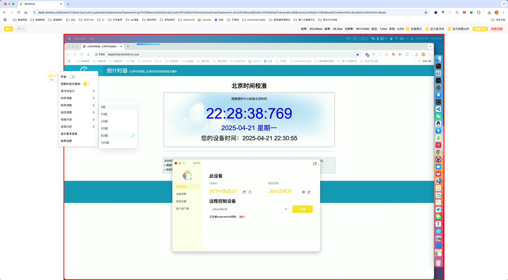
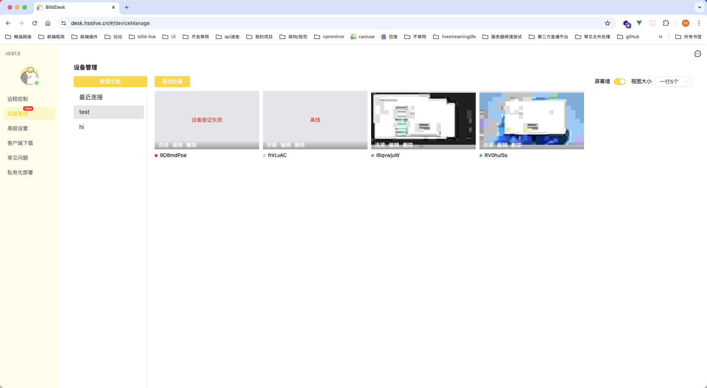

BilldDesk 快问快答：一款开源远控，凭什么让 ToDesk 用户心动？
BilldDesk 把付费版才有的功能全放进免费版，还支持私有化部署。这篇快问快答把它是什么、能干嘛、怎么装、有什么坑一次讲透。
整理一篇关于 BilldDesk 的快问快答，把大家选远控软件时最纠结的几个问题一次性聊清楚。
BilldDesk 到底是什么？
BilldDesk 是一款开源的跨平台远程桌面软件，底层用定制 WebRTC 协议，客户端基于 Flutter、Vue3、Nodejs 这些现代技术栈构建。它的定位很明确——做一款全功能免费开放、还能自己搭服务器的远程桌面解决方案。详细功能列表和最新版本可以去 BilldDesk官网 看看。
谁需要 BilldDesk？
四类人会特别关心它：第一类是远程办公者，怕 ToDesk 免费版每月 80 小时、200 次的限制不够用；第二类是游戏玩家和云工作室，需要驱动级键鼠配合 FPS 游戏的相对鼠标模式；第三类是企业和技术团队，要求数据不出内网、能私有化部署；第四类是喜欢折腾开源的个人用户，想自己搭中继服务器或者二次开发。
怎么装？被控端要配什么？
安装包从官方下载拿，Windows 端双击就能装，macOS 和 Android 端装完之后必须开对应权限。Windows 端被控不需要额外系统权限；macOS 一定要在隐私设置里开录屏和辅助功能，不然连上也是黑屏；Android 要开屏幕捕获、无障碍服务和悬浮窗。被控端打开后会自动生成一组 8 位数字设备码和连接密码，也可以把设备码改成好记的英文数字组合。连接密码每次重启客户端自动刷新，比固定密码安全得多。

远程连接的安全吗？
传输层面全部走 AES 加密，屏幕画面、键鼠指令、剪贴板和文件传输数据在 WebRTC 握手阶段就协商好密钥了。鉴权是双因素的——主控端必须同时输入正确的设备码和密码，被控端还会弹确认窗口，除非你开启了无人值守模式。还有两层安全加分项：一是可以开启「仅允许同账号远程」，只有登录同一个 BilldDesk 账号的设备才能连上来；二是支持自定义鉴权接口，企业能把远程验证接入自己的权限系统，只让特定部门或角色发起连接。
鼠标模式有什么讲究？
BilldDesk 给了三种鼠标模式。默认的主控端鼠标模式就是日常远控用的，主控端鼠标位置直接映射到被控端屏幕坐标。第二种是被控端鼠标模式，专门给 FPS 游戏准备的——主控端移动鼠标不会直接映射坐标，而是累积相对位移，这样在 FPS 游戏里就能 360 度旋转视角，不会被屏幕边界卡住。第三种智能鼠标模式会自动检测被控端当前窗口，全屏游戏时切相对位移，桌面应用时切回绝对坐标。远程玩 FPS 游戏配合驱动级键鼠，整套配置拉满就是游戏场景最佳体验。想研究更多驱动级键鼠的配置细节可以查 BilldDesk文档。

和 ToDesk 免费版比有什么优势？
最核心的一点：BilldDesk 免费版没有连接次数限制，也没有画质帧率限制。ToDesk 免费版每月 80 小时、200 次上限，画质锁在 1080p 加 30 帧，BilldDesk 这边隐私屏、虚拟屏、屏幕墙这些高阶功能全免费开放。ToDesk 免费版同账号只能开一个主控通道，BilldDesk 不限制。另外，BilldDesk 支持 Docker 一键私有化部署，数据完全留在自己的服务器上，这一点 ToDesk 根本没法比。
有什么坑要注意？
先说进程保活是 Pro 版专属功能，免费版被控端崩溃了不会自动重启。然后是连接风控——短时间内被太多远控请求命中的话，官方中继服务器可能会标记成风险连接直接拒掉，付费 VIP 不受这个限制。Windows 上 360 杀毒误报的情况时有发生，官方建议先退出 360 再启动。还有 Windows 7 不支持 BilldDesk，升级系统是前提。
值不值得长期用？
如果你受够了 ToDesk 免费版的各种限制、想自己搭服务器、或者需要游戏场景的特殊鼠标模式，BilldDesk 是目前开源远控里功能最完整的一个，免费版能覆盖绝大多数日常远控场景，私有化部署能力更是企业和技术团队的刚需。最后一句：能自己搭服务器、免费版全功能开放，这两点就值得装一个试试。它的开源代码和配套资料在 GitHub、Gitee、GitCode 三个平台都同步维护着，方便不同地区的开发者按需取用。